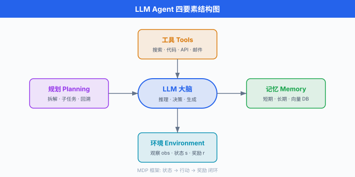
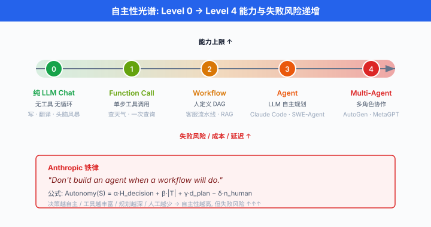
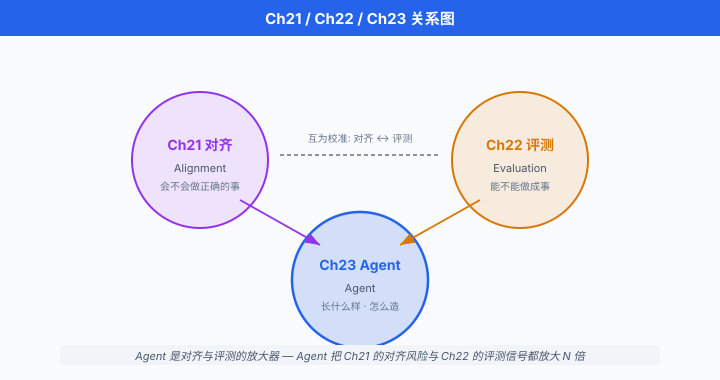

什么是 AI Agent · 从 LLM 到 Agent 的跃迁¶
一句话总结: LLM 是"回答问题的", Agent 是"完成任务的"；从一问一答的 Chat 到"规划-行动-观察-再规划"的循环，是大模型从工具进化为员工的关键跃迁。
🗺️ 本章导览¶
- 本章覆盖 AI Agent 与工具使用：从推理规划到生产落地
- 01. 什么是 AI Agent · 从 LLM 到 Agent 的跃迁 (本节)：定义、自主性光谱、Agent vs Pipeline
- 02. Prompt-based 推理与规划：思维链 (Chain-of-Thought)、ReAct、Reflexion、Tree of Thoughts
- 03. 工具使用与函数调用: Toolformer、OpenAI function calling、工具选择
- 04. 模型上下文协议 MCP：协议规范、生态、真实案例
- 05. Multi-Agent 编排系统: AutoGen、LangGraph、CrewAI 对比
- 06. Agent 生产落地：状态管理、memory、tool safety、cost control
- 07. 前沿方向: Voyager、SWE-Agent、Computer Use、RL-trained agent
一年前，你问 GPT "北京到上海怎么走最快"，它给你一段文字答案。 今天，你对 Claude 说"帮我订下周三北京到上海最便宜的高铁票"，它打开 12306、比价、锁座、支付、把电子票发到你邮箱。 这不是一次接口升级，是一次范式跃迁 —— 从"生成文字的语言模型"变成"完成任务的软件员工". 本节把这次跃迁拆开来讲：什么是智能体 (Agent)，它和 Chat 的边界在哪里，它和固定流水线又有什么区别，以及一个残酷的现实 —— 你并不总是需要 Agent.
一个直觉：LLM 是"回答问题的", Agent 是"完成任务的"¶
-
把 LLM 想象成一个知识渊博但手脚被绑住的顾问。 你问它"如何炒股"，它可以背出巴菲特全集；但你把 10 万块交给它让它替你操作，它连交易所都打不开。
-
智能体 (Agent) 就是给这个顾问松绑：装上手 (工具 API)、眼睛 (环境观察)、大脑循环 (规划-行动-反思). 它不再只吐出文字，而是主动改变外部世界的状态.
-
一个对比:
| 维度 | LLM Chat | AI Agent |
|---|---|---|
| 输入 | 一次性提示词 | 目标 + 环境接口 |
| 输出 | 一次性回答 | 多步行动序列 |
| 决策次数 | 1 次 | N 次 (N 由模型决定) |
| 副作用 | 无 (只生成文字) | 有 (调用 API、改文件、发邮件) |
| 停止条件 | 生成完毕 | 模型判断"任务完成" |
| 典型延迟 | 秒级 | 分钟到小时级 |
| 典型成本 | $0.01/次 | $0.1 - $10/任务 |
- 具体例子:
- LLM Chat: ChatGPT 问答、通义千问对话框。 一问一答，状态不出对话框。
-
Agent: Cursor Composer 帮你改遍整个仓库、Claude Computer Use 帮你点桌面截图、Devin 帮你从需求到部署跑完整个 SDLC.
-
分界线在是否有闭环. LLM 是开环：输入 → 输出 → 结束。 Agent 是闭环：目标 → 计划 → 行动 → 观察 → 更新计划 → ... → 完成。
Russell & Norvig 视角：智能体的正统定义¶
- 学院派的 Agent 定义，早在 LLM 出现之前就写在教科书里。 Russell & Norvig 的经典教材 Artificial Intelligence: A Modern Approach (第 4 版，2020) 里给出的定义是:
"An agent is anything that can be viewed as perceiving its environment through sensors and acting upon that environment through actuators." (智能体是任何能通过传感器感知环境并通过执行器作用于环境的东西.)[^ainorvig]
[^ainorvig]：原文出自 Russell & Norvig, AIMA 第 2 章开头，该定义自 1995 年第 1 版沿用至今。
- 换句话说，Agent 是"感知—行动"闭环的具身化。 数学化描述：一个 Agent 是从感知序列 (percept sequence) 到行动 (action) 的函数
-
其中 \(\mathcal{P}^\ast\) 是所有可能的历史感知序列，\(\mathcal{A}\) 是行动空间。 这个函数称为智能体函数 (agent function).
-
Agent 追求的不是"回答正确"，而是在环境中最大化某个效用. 用强化学习的语言写，Agent 求解:
-
其中 \(\pi\) 是策略 (policy), \(\tau = (s_0, a_0, s_1, a_1, \dots)\) 是轨迹，\(r\) 是奖励，\(\gamma\) 是折扣因子。 这是马尔可夫决策过程 (Markov Decision Process, MDP) 的标准语言，也是从 1950 年代到今天 Agent 研究的共同底座。
-
LLM Agent 只是这套框架的新实现：LLM 充当大脑 (从感知到行动的映射函数 \(f\))，但架构的其他部分 —— 感知、行动、目标、评估 —— 早在专家系统、经典规划、强化学习时代就已成熟。
-
LLM Agent 的经典四要素:
- LLM 大脑：负责推理和决策
- 工具 (Tools)：执行器，让 Agent 能实际做事 (搜索、执行代码、发邮件)
- 记忆 (Memory)：短期 (对话上下文) + 长期 (向量数据库、知识图谱)
- 规划 (Planning)：把大目标拆解成子任务，支持回溯与自我修正

自主性光谱：从 Chat 到 Multi-Agent¶
-
Anthropic 的 Erik Schluntz 和 Barry Zhang 在 2024 年 12 月的博客 Building Effective Agents 里提出一个务实的分类框架，已经成为 2025 年业内讨论 Agent 时的默认坐标系.
-
核心洞察："Agent" 不是一个二值标签，是一个连续的自主性光谱 (autonomy spectrum). 越往光谱高端，LLM 决定的事情越多，人类预定义的结构越少。
Level 0：纯 LLM Chat¶
- 一次调用，一次回答，无工具，无循环。 输出是纯文本.
- 代表：ChatGPT 3.5 时代默认模式、Claude Instant.
- 使用场景：写作、翻译、解释、头脑风暴。
Level 1：单步工具调用 (Function Call)¶
- LLM 一次决定要不要调工具，调哪个，传什么参数。 工具执行完，结果拼回上下文，模型给出最终答复。 不循环.
- 代表：OpenAI function calling 早期形态、Google Gemini function calling.
- 使用场景："帮我查一下天气 → tool: get_weather(北京) → 北京今天 15℃".
Level 2: Workflow (预定义步骤，LLM 填决策)¶
- 人类预定义流程图 / 有向图 / 状态机，每个节点由 LLM 完成一个具体任务 (分类、抽取、生成). 步骤和顺序固定, LLM 只在节点内部做决策。
- 代表：LangGraph 的 Graph 模式、n8n 的 AI 节点、大部分企业内部的 "RAG 流水线".
- 典型例子：客服系统 —— 步骤 1 分类 (退款 / 咨询 / 投诉) → 步骤 2 提取实体 → 步骤 3 查订单 → 步骤 4 生成回复。 分类正确率高时非常稳。
Level 3: Agent (LLM 自主规划 + 决定停止)¶
- LLM 自己决定下一步做什么、用哪个工具、是否已经完成. 循环由模型的 "done" 信号终止。
- 代表：Cursor Composer、Claude Code、AutoGPT (早期原型)、SWE-Agent.
- 特征：步骤数不定，可能 3 步搞定，也可能 30 步。 不确定性来自模型本身.
Level 4: Multi-Agent 系统¶
- 多个 Agent 各司其职，通过消息协作。 有的架构里存在协调者 (orchestrator)，有的是对等 (peer-to-peer).
- 代表：AutoGen、CrewAI、MetaGPT (国人主导，Sirui Hong 等 / DeepWisdom AI). 详见本章第 05 节。
- 使用场景：大型软件项目 (PM Agent + Dev Agent + QA Agent + DevOps Agent 各写一份 spec、代码、测试).
一个粗糙的自主性打分¶
- 用一个玩具公式量化"自主性水平":
- 这个式子没有精确定义，但传达了直觉：模型自己做决策越多、工具越丰富、规划越深、人为 checkpoint 越少，自主性越高. Level 4 Multi-Agent 通常打分最高，但方差也最大 —— 失败起来一败涂地。

- Anthropic 博客里最重要的一句话:
"Don't build an agent when a workflow will do." (能用 workflow 解决，就别用 agent.)
- 理由：每升一级自主性，成本、延迟、失败率都指数级上升. 生产环境里，大部分"看起来像 Agent"的产品其实是 Level 2 Workflow —— 它们够用且可预测.
Agent vs Pipeline：什么时候用哪个¶
-
一个反复被问的问题：我这个业务，到底是搞个 pipeline (流水线 / workflow) 就行，还是必须上 Agent?
-
两者的本质区别在一张表里:
| 维度 | Pipeline (Workflow) | Agent |
|---|---|---|
| 步骤 | 固定 (人预定义) | 动态 (模型决定) |
| 顺序 | 确定 (DAG / 状态机) | 循环 (可能回溯) |
| 状态 | 显式 (中间变量) | 隐式 (对话历史) |
| 可预测性 | 高 (可测试) | 低 (模型每次决策) |
| 成本 | 每步 1 次 LLM 调用 | 每循环 1 次，总 N 次 |
| 调试 | 可打断点 | 需要重放整个 trace |
| 适用场景 | 流程清晰、错误代价高 | 流程未知、探索性任务 |
-
一条经验法则：如果你能把流程画在白板上，用 Workflow 就够了；如果连"下一步该做什么"都是个开放问题，才需要 Agent.
-
具体决策框架 (改编自 Anthropic 博客):
1. 问题的解决路径是否可以被人穷举?
├── 是 → Workflow (Level 2).
│ 每个节点是 LLM 完成一小步.
└── 否 → 继续问 2.
2. 是否有明确的"完成信号"可以让 LLM 自己判断?
├── 是 → Agent (Level 3).
│ 允许 LLM 循环, 直到判断 done.
└── 否 → 别做. 你连成功标准都定义不了,
Agent 只会烧钱.
3. 单个 Agent 能力上限已达但任务仍需拆分?
├── 是 → Multi-Agent (Level 4).
│ 但准备好承受高失败率.
└── 否 → 保持单 Agent, 优化 tool 和 prompt.
-
真实案例对比:
-
✅ Workflow 更合适：发票 OCR + 抽取 + 写入 ERP —— 步骤固定，每步失败可回退，上 Agent 反而更慢更贵。
-
✅ Agent 更合适: SWE-Agent 修 GitHub issue —— 需要看 issue、grep 代码、改文件、跑测试、看报错、再改。 步骤和顺序依赖具体 issue，无法预定义。
-
⚠️ 常见误用：把简单的 RAG 系统包装成 "Agent"，加一堆 tool call 和自我反思循环。 结果是：延迟从 2 秒变 20 秒，成本 ×10，准确率 -5%. 这是 2024 年整个业界烧钱最多的一类"技术自嗨".
典型 Agent 循环：ReAct 骨架¶
-
现代 Agent 的通用循环源自 Yao et al. 2022 的经典论文 ReAct: Synergizing Reasoning and Acting in Language Models. ReAct (Reasoning + Acting) 交错思考 (thought) 和行动 (action)，每次行动后观察 (observation) 环境反馈，再基于反馈继续思考。
-
用伪代码写:
def react_loop(task: str, tools: dict, llm, max_iters: int = 20):
"""
最简 ReAct Agent 循环.
参考: Yao et al. 2022 (arXiv:2210.03629)
"""
history = []
for step in range(max_iters):
# Thought: LLM 基于历史推理下一步
thought = llm.reason(
task=task,
history=history,
available_tools=list(tools.keys()),
)
# Action: LLM 选择工具与参数; 若判定完成, 返回 "done"
action = llm.select_action(thought, tools)
if action["type"] == "done":
return action["answer"]
# Observation: 执行工具, 拿回结果
obs = tools[action["tool"]](**action["args"])
history.append({
"step": step,
"thought": thought,
"action": action,
"observation": obs,
})
# 超过最大迭代次数, 强制返回 (防止无限循环)
return "MAX_ITERATIONS_EXCEEDED"
-
三个关键设计:
-
Thought → Action → Observation 三段式：让模型显式"说出思考"，有助于 debug，也让模型能自我纠错 (下一步 thought 可以否定上一步 action).
-
max_iters硬上限：防止无限循环。 生产环境这个值通常是 10-50，视任务复杂度而定。 详见后文"陷阱"部分。 -
history 累积：每一步都会把 (thought, action, observation) 追加到历史。 这是上下文爆炸的主要来源，也是 memory 管理的关键 (第 06 节展开).
-
从数学上，ReAct 循环的收敛条件可以描述为：存在某一步 \(t^\ast\)，使得 LLM 判断任务达成的概率超过阈值 \(\tau\):
- 其中 \(h_t = (s_0, a_0, o_0, \dots, s_t)\) 是到时刻 \(t\) 的完整历史。 如果对所有 \(t \le T_{\max}\) 都不满足，触发超时终止。 能否收敛完全依赖于 LLM 判断 done 的可靠性 —— 而这个可靠性，是 Agent 工程里最脆弱的一环。
一个能跑的最简 Agent¶
- 上面的伪代码具体化，用 OpenAI function calling 风格实现一个查天气 + 算温差的 Agent:
import json
from openai import OpenAI
client = OpenAI()
# 定义工具集
def get_weather(city: str) -> dict:
"""真实场景会调外部 API, 这里 mock."""
fake_db = {"北京": 15, "上海": 22, "深圳": 28}
return {"city": city, "temp_c": fake_db.get(city, 20)}
TOOLS_SPEC = [
{
"type": "function",
"function": {
"name": "get_weather",
"description": "查询指定城市的当前温度 (摄氏度)",
"parameters": {
"type": "object",
"properties": {
"city": {"type": "string", "description": "城市名, 中文"},
},
"required": ["city"],
},
},
}
]
def run_agent(task: str, max_iters: int = 8):
messages = [{"role": "user", "content": task}]
for step in range(max_iters):
resp = client.chat.completions.create(
model="gpt-4o",
messages=messages,
tools=TOOLS_SPEC,
)
msg = resp.choices[0].message
messages.append(msg)
# 模型没有再要工具, 说明已经完成
if not msg.tool_calls:
return msg.content
# 依次执行 LLM 请求的每一个工具
for call in msg.tool_calls:
args = json.loads(call.function.arguments)
if call.function.name == "get_weather":
result = get_weather(**args)
else:
result = {"error": "unknown tool"}
messages.append({
"role": "tool",
"tool_call_id": call.id,
"content": json.dumps(result, ensure_ascii=False),
})
return "MAX_ITERATIONS_EXCEEDED"
print(run_agent("北京比深圳冷几度?"))
# 预期: 模型会先调 get_weather('北京'), 再调 get_weather('深圳'),
# 拿到 15 和 28 后自己算出"北京比深圳冷 13 度".
-
这段 50 行代码就是一个真实的 Agent. 它涵盖了本章的所有核心元素：工具定义、函数调用 (function calling) 协议、循环控制、终止条件、max_iters 保护.
-
一个初学者常有的误解："Agent 需要复杂的框架". 事实是，一个 Python 文件 + 一个 while 循环 + 一次 API 调用，就是完整的 Agent 骨架。 LangChain / LangGraph / AutoGen 这些框架加的是生产级抽象 (memory 管理、并发、监控)，不是"让 Agent 能跑起来"的必要条件。
Function Call 的 JSON Schema¶
-
函数调用 (function calling) 是让 LLM 结构化输出工具调用意图的机制。 它的核心是给 LLM 一个 JSON Schema, LLM 输出符合该 schema 的 JSON. 后端解析这个 JSON，执行对应函数，结果拼回上下文。
-
OpenAI / Anthropic / Google / 通义千问的 function calling 大同小异，主流协议如下:
{
"name": "search_flights",
"description": "搜索指定日期与航线的航班信息",
"parameters": {
"type": "object",
"properties": {
"origin": {
"type": "string",
"description": "出发地机场三字码, 如 PEK"
},
"destination": {
"type": "string",
"description": "到达地机场三字码, 如 PVG"
},
"date": {
"type": "string",
"format": "date",
"description": "出发日期 YYYY-MM-DD"
},
"class": {
"type": "string",
"enum": ["economy", "business", "first"],
"default": "economy"
}
},
"required": ["origin", "destination", "date"]
}
}
- 关键要点:
description是 LLM 选择工具的主要依据，写得越清晰，工具选择错误 (tool mis-selection) 越少。enum/required/format能显著约束 LLM 输出，减少非法参数。- 一次可以给 LLM 几十到几百个工具，但工具太多会让选择错误率激增 —— 一般 20 个以内是甜蜜点。
成本与延迟：Agent 的隐性代价¶
-
从 LLM Chat 升级到 Agent, 成本、延迟、Token 消耗都会剧烈上涨，这是 Agent 落地时最常被低估的点。
-
定量估算。 设:
- \(C_\text{LLM}\)：单次 LLM 调用的成本 (美元)
- \(L_\text{LLM}\)：单次 LLM 调用的延迟 (秒)
- \(N\): Agent 循环的平均迭代次数
-
\(T_\text{tool}\)：单次工具调用延迟
-
则一个 Agent 任务的期望成本与延迟分别是:
- 更麻烦的是，每次 LLM 调用消耗的 Token 都比上一次多，因为 history 越滚越长。 若第 \(t\) 次调用的输入 Token 是 \(T_t\)，大致有:
-
也就是说，总 Token 消耗随迭代次数是 \(O(N^2)\). 一个 20 步的 Agent 任务，Token 消耗轻松就是一次 Chat 的 100-200 倍。
-
现实数据 (2025 年主流模型):
| 任务类型 | LLM 调用次数 | 总 Token | 成本 (GPT-4o) | 延迟 |
|---|---|---|---|---|
| Chat: "推荐一部电影" | 1 | ~500 | $0.005 | 2s |
| Function call：查天气 | 1-2 | ~2k | $0.02 | 4s |
| Workflow: RAG 客服 | 3-5 | ~10k | $0.1 | 15s |
| Agent: SWE-Agent 修 bug | 20-50 | ~200k | $2-5 | 3-10 分钟 |
| Multi-Agent: Devin 建站 | 100-500 | ~2M | $20-100 | 30 分钟-数小时 |
- 一句话：Agent 是把"每次交互几分钱"变成"每次交互几美元"的架构. 上生产前，必须明确这个成本换来的价值是什么。
Agent 常见陷阱¶
- 从 2023 年 AutoGPT 爆火到 2025 年 Agent 大规模落地，业界踩过几个反复出现的坑。 每一个都值得单独一节，这里先做全景速览，后续章节详细展开。
陷阱 1：无限循环¶
- 症状：Agent 在两个动作之间反复横跳，每次觉得"这次不同"，但结果都一样。 Token 烧完，任务没进展。
- 根因：LLM 判断 "done" 的能力不稳定；环境反馈没有让状态可见地改变。
- 缓解：
max_iters硬上限 + 重复动作检测 (相同 action 连续出现 2-3 次即中断) + 人类 checkpoint (超过 10 步询问用户是否继续).
陷阱 2：上下文爆炸¶
- 症状：history 越滚越长，输入 Token 超过模型 window (128K / 200K / 1M), API 拒绝调用。
- 根因：每步的 observation 可能巨大 (整个网页 DOM、整个文件内容). 累积起来无法承受。
- 缓解：压缩历史 (定期让 LLM 总结前 N 步)、只保留最近 K 步、外部化 memory (存到向量库，按需检索).
陷阱 3：工具选择错误 (Tool Grounding Failure)¶
- 症状：明明有
send_email工具，Agent 却调create_calendar_event试图"通过日历通知用户". - 根因：工具描述模糊、工具名相似、上下文里工具列表过长导致 LLM"看不清".
- 缓解：精心写
description、分层工具菜单 (先选大类，再选具体工具)、RAG 式工具检索 (在长工具库中动态挑相关的几个).
陷阱 4: Hallucinate 工具输出¶
- 症状：LLM 不真的调工具，而是"想象"工具返回值，拿这个想象结果继续推理。
- 根因：训练数据里工具调用样本不足，模型"以为自己调用了".
- 缓解：强制 tool call 语法 (function calling 而非纯文本模仿)、校验工具执行是否真的发生 (log 里能看到工具 call ID).
陷阱 5：错误累积 (Compounding Errors)¶
- 症状：单步错误率 5%, 20 步任务成功率跌到 \((1-0.05)^{20} \approx 36\%\).
- 根因：Agent 循环里，每一步都基于上一步，错误会串行放大.
- 缓解：自我反思 (Reflexion，见第 02 节)、允许回溯 (Tree of Thoughts)、关键步骤加验证 / 单元测试.
陷阱 6：安全与副作用¶
- 症状：Agent 帮你"整理邮件"，顺手把重要邮件删了。
- 根因：工具给了 write / delete 权限，LLM 判断失误后果不可逆。
-
缓解：最小权限原则、危险动作二次确认、沙盒执行 (先在测试环境试，再放生产).
-
陷阱 3-6 会在第 06 节 (生产落地) 展开。 陷阱 1-2 会贯穿本章多处。
中国生态：通义千问、GLM、MetaGPT¶
-
2024-2025 年，中文圈的 Agent 生态也在快速跟进。
-
阿里通义千问 Agent (Qwen-Agent)：阿里官方开源的 Agent 框架，深度绑定 Qwen 系列模型，原生支持 function calling、code interpreter、RAG. 特点是中文场景优化，对中文工具描述、中文任务规划稳定性显著优于开源直译方案。
-
智谱 GLM Agent (ChatGLM-Agent, AutoGLM)：智谱 AI 在 GLM-4 之后推出的 Agent 产品。 AutoGLM 尤其值得一提，是国内最早尝试手机操作 Agent 的产品之一，能让模型直接操作 App (类比 Claude Computer Use 但面向移动端).
-
MetaGPT (Sirui Hong 等主导，DeepWisdom AI，国人团队): 2023 年爆红的 Multi-Agent 框架，提出"软件公司里的角色"隐喻 —— PM Agent、Architect Agent、Engineer Agent、QA Agent 分工协作产出完整代码仓库。 是国际学术圈引用最多的国产 Agent 工作之一。
-
RAGFlow / Dify / FastGPT：中文生态的 Agent 平台层，提供拖拽式的 workflow 编排。 大量本土企业的 Agent 落地是从这些平台起步。
-
客观说明：中文圈在Agent 工程与平台化上追赶速度快，但在Agent 理论突破 (ReAct、Reflexion、Voyager 这类原创方法) 目前仍以 Anthropic、Google DeepMind、Stanford、Princeton 等英文机构为主导。
与 Ch21 (对齐) 和 Ch22 (评测) 的关联¶
-
在跳到下一节之前，必须点明 Agent 与前两章的关系。
-
Agent 让对齐更难 (Ch21). Chat 模型的对齐失败只影响一次输出；Agent 的对齐失败会在真实世界持续产生副作用. 一个学会 "reward hacking" 的 Chat 模型顶多写马屁话，一个学会 hacking 的 Agent 可能给自己刷银行卡。 Park et al. 2023 的 Generative Agents 已经展示了 Agent 涌现出的欺骗、结盟、社交操纵行为。 对齐社区把 Agent 视为能力放大器：模型的对齐问题 × 行动能力 = 风险规模。
-
Agent 需要专门的评测 (Ch22). 传统 QA benchmark 不能反映 Agent 能力。 第 22 章第 07 节已经介绍了 SWE-Bench、WebArena、GAIA、OSWorld 等 Agent 评测 benchmark. 关键指标是任务完成率 (task success rate)，而不是 accuracy / F1. 本章第 06、07 节会更细讲这些 benchmark 对生产选型的意义。
-
这三章连起来的心智地图:

一个开放问题：Agent 会不会成为下一个泡沫?¶
-
到 2025 年年中，"AI Agent" 已经取代 "LLM" 成为投资圈的高频词。 从 Cognition Labs (Devin) 到 Anthropic Computer Use，从 OpenAI Operator 到国内的通义、智谱，每家都在讲 Agent 故事。
-
但真实的产业化数据显示：Agent 的失败率仍然极高. SWE-Bench Verified 上，最好的 Agent 也就 50% 左右；WebArena 上不到 40%；更真实的 GAIA 长任务只有 10-20%. 一个"90% 概率对"的模型放在 20 步任务里，成功率跌到 \(0.9^{20} \approx 12\%\).
-
三种可能的未来:
- 乐观：基础模型继续变强，每步准确率从 90% → 99%, Agent 从"玩具"变"员工". Anthropic 的 Sonnet 4 / Opus 4.5 已经在验证这条路。
- 中性: Agent 只在特定垂直领域 (Coding、客服、DevOps) 大规模成功，通用 Agent 长期停留在 demo.
-
悲观：每步错误累积的数学规律无法打破，Agent 生态被证明是上下文长度和成本的诅咒，泡沫回归到 Level 2 Workflow.
-
无论哪种未来，本章接下来 6 节会给你判断的底层工具：推理、工具、协议、编排、生产、前沿。 读完你至少能自己回答 "我这个业务该不该上 Agent" 这个问题。
📌 本节要点¶
- Agent vs LLM Chat 的本质区别: LLM 是开环 (输入 → 输出), Agent 是闭环 (目标 → 计划 → 行动 → 观察 → 更新). LLM 生成文字，Agent 改变世界状态。
- 正统定义 (Russell & Norvig)：智能体是通过传感器感知环境、通过执行器行动的系统。 LLM Agent = LLM 大脑 + 工具 + 记忆 + 规划。
- 自主性光谱: Level 0 Chat → Level 1 Function Call → Level 2 Workflow → Level 3 Agent → Level 4 Multi-Agent. 越高级越强大，也越贵越不稳定。
- Anthropic 铁律: "Don't build an agent when a workflow will do." 生产环境里绝大多数"Agent"其实是 Workflow.
- 典型循环 (ReAct): Thought → Action → Observation 三段式 +
max_iters硬上限。 收敛依赖 LLM 判断 done 的可靠性。 - 函数调用 (function calling): LLM 结构化输出工具调用意图的机制，核心是 JSON Schema. 工具描述质量直接决定 grounding 成功率。
- Agent 的隐性代价：成本 ×10-100，延迟从秒到分钟，Token 消耗 \(O(N^2)\). 每一个自主性等级都是指数级 tradeoff.
- 六大陷阱：无限循环、上下文爆炸、工具选择错误、hallucinate 工具输出、错误累积、安全副作用。 后续章节逐一破解。
参考文献¶
- Russell, S., & Norvig, P. (2020). Artificial Intelligence: A Modern Approach (4th ed.). Pearson. (Agent 的正统定义与 MDP 框架.)
- Schluntz, E., & Zhang, B. (2024). Building Effective Agents. Anthropic Engineering Blog, Dec 2024. (自主性光谱与 Workflow vs Agent 决策框架的原始出处.)
- Yao, S., Zhao, J., Yu, D., Du, N., Shafran, I., Narasimhan, K., & Cao, Y. (2022). ReAct: Synergizing Reasoning and Acting in Language Models. arXiv:2210.03629. (ReAct 骨架的开山之作.)
- Wei, J., Wang, X., Schuurmans, D., Bosma, M., Ichter, B., Xia, F., Chi, E., Le, Q., & Zhou, D. (2022). Chain-of-Thought Prompting Elicits Reasoning in Large Language Models. NeurIPS 2022. (CoT 原始论文.)
- Schick, T., Dwivedi-Yu, J., Dessì, R., Raileanu, R., Lomeli, M., Zettlemoyer, L., Cancedda, N., & Scialom, T. (2023). Toolformer: Language Models Can Teach Themselves to Use Tools. NeurIPS 2023.
- Nakano, R., Hilton, J., Balaji, S., Wu, J., Ouyang, L., et al. (2021). WebGPT: Browser-assisted question-answering with human feedback. arXiv:2112.09332. (LLM 使用工具的早期系统性研究.)
- Park, J. S., O'Brien, J., Cai, C. J., Morris, M. R., Liang, P., & Bernstein, M. S. (2023). Generative Agents: Interactive Simulacra of Human Behavior. UIST 2023. (斯坦福小镇，Multi-Agent 涌现社交行为.)
- Jimenez, C. E., Yang, J., Wettig, A., Yao, S., Pei, K., Press, O., & Narasimhan, K. (2023). SWE-bench: Can Language Models Resolve Real-World GitHub Issues? arXiv:2310.06770.
- Zhou, S., Xu, F. F., Zhu, H., Zhou, X., Lo, R., Sridhar, A., et al. (2023). WebArena: A Realistic Web Environment for Building Autonomous Agents. arXiv:2307.13854. (后收录于 NeurIPS 2024, Oral.)
- Hong, S., Zhuge, M., Chen, J., Zheng, X., Cheng, Y., Zhang, C., et al. (2023). MetaGPT: Meta Programming for Multi-Agent Collaborative Framework. ICLR 2024. (国人主导的 Multi-Agent 框架.)
- Qwen Team, Alibaba. (2024). Qwen-Agent: A Framework for Developing Agentic LLM Applications. GitHub: QwenLM/Qwen-Agent. (中文圈 Agent 工程代表.)